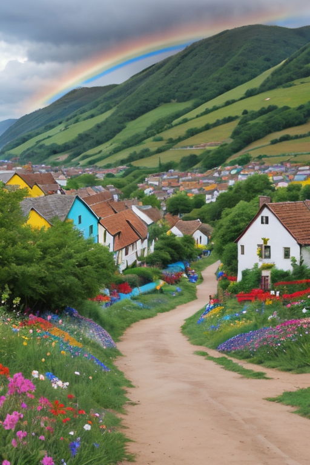
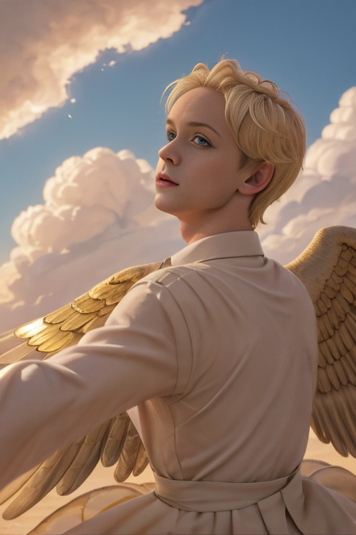
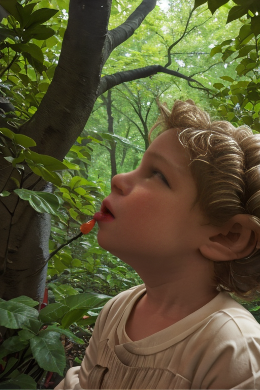
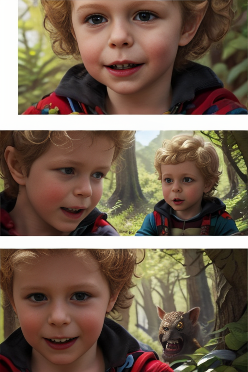
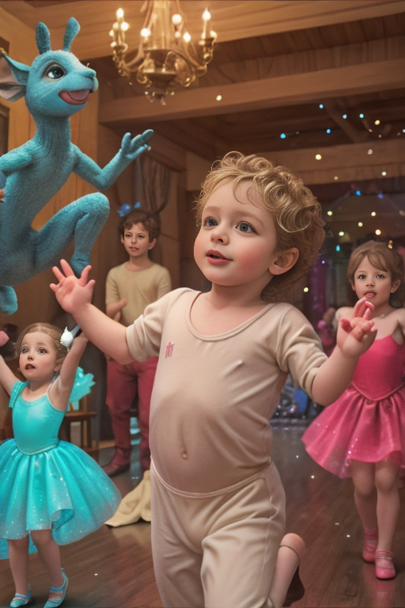
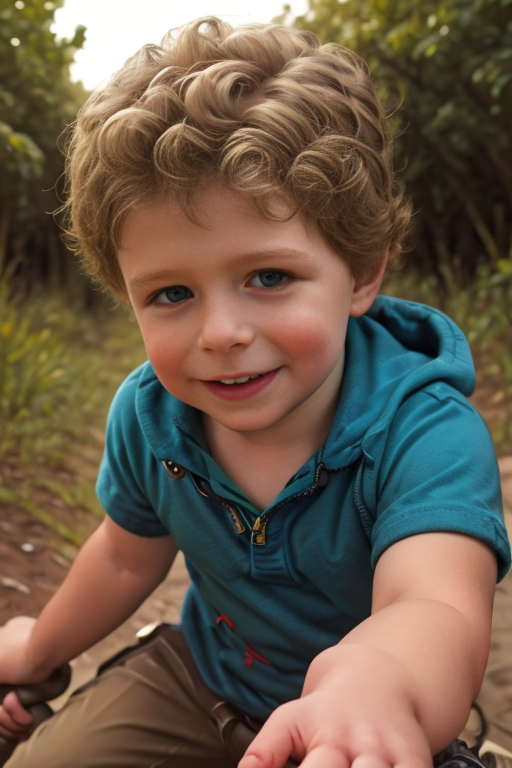
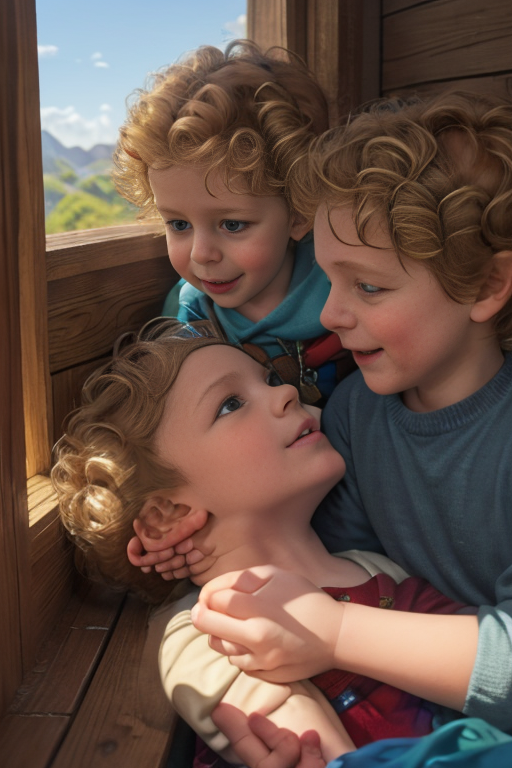
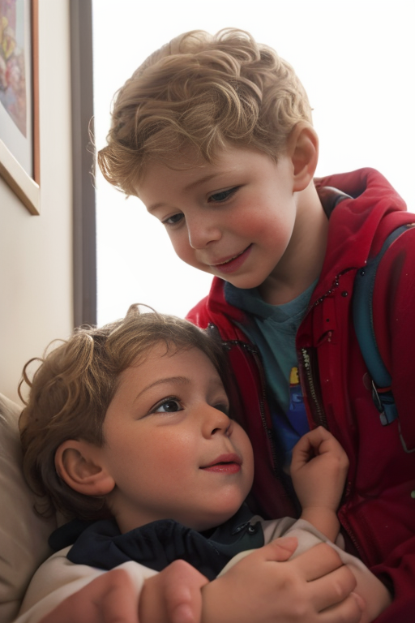

|  | Once upon a time, in a quaint little village nestled between rolling hills and a sparkling lake, lived a curious and imaginative child named Gavin. |
| One sunny afternoon, as Gavin played near the lake, he discovered a peculiar pebble with an intriguing blue sheen. With a sense of wonder, he picked it up and held it close to his heart. |
|  | As Gavin examined the magical pebble, he noticed that it glowed softly in his hand. Suddenly, the ground beneath him began to tremble ever so slightly, and a magnificent dragon appeared before him. |
|  | The dragon, with scales as shimmering as the lake and eyes that held centuries of wisdom, introduced himself as Draco, the guardian of the mystical creatures of the forest. |
|  | Draco told Gavin that the blue pebble was an ancient artifact known as the 'Stone of Dreams'. With it, he could enter the magical world that existed parallel to their own and embark on incredible adventures. |
|  | Gavin couldn't believe his ears! He eagerly accepted the challenge and, with Draco by his side, stepped into the mystical world, where trees spoke in whispers and rivers flowed with sweet nectar. |
|  | Together, Gavin and Draco embarked on a series of enchanting quests, meeting magical creatures like talking caterpillars, friendly goblins, and gentle unicorns. They battled fierce beasts, solved intricate riddles, and even learned to dance the enchanted waltz. |
|  | With each adventure, Gavin grew stronger and more confident, learning valuable lessons about bravery, friendship, and the power of imagination. |
|  | Eventually, it was time for Gavin to return home. He bid farewell to Draco and his new friends, promising to visit them again soon. As he stepped back into his world, Gavin felt a sense of fulfillment like never before. |
 | From then on, whenever Gavin felt the need for adventure or a bit of magic in his life, he would gaze at the blue pebble and step through the portal to the magical world. And so, Gavin's extraordinary journey continued, one enchanting adventure after another. |